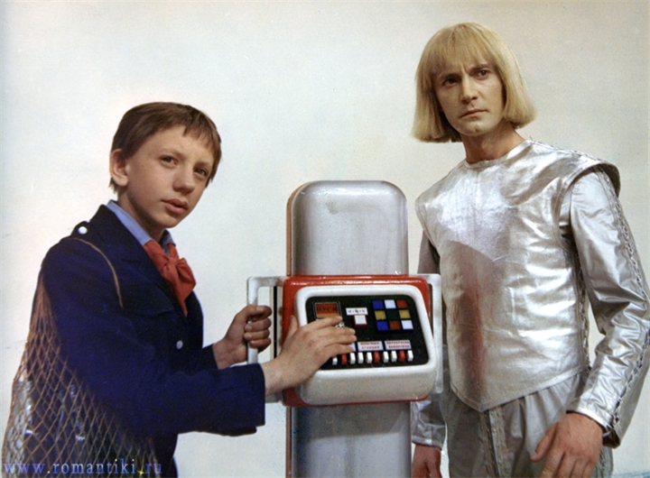

Гостья из будущего — советский детский 5-серийный телевизионный научно-фантастический художественный фильм, снятый по мотивам фантастической повести Кира Булычёва «Сто лет тому вперёд» (1977). Премьера фильма прошла в 1985 года по Первой программе ЦТ СССР в дни весенних школьных каникул, а затем лента многократно повторялась на разных телеканалах.
Бутафорскому цеху пришлось основательно поработать над созданием удивительного агрегата – машины времени. Все технологии мастеров до этого были заточены на создание классических декораций для сказок – из лепнины, дерева, но никак не из пластика. Поэтому то, как будут выглядеть машина времени и тот самый миелофон, придумывали буквально на ходу. Сделать заветный прибор для чтения мыслей кристаллическим решил сам Павел Арсенов – ему показалось, что такая форма как нельзя лучше подойдет для устройства. А для имитации кнопок машины времени использовали самый обычный кубик Рубика – он благодаря своей яркости хорошо смотрелся на белой приборной панели.
Отдельную сложность представляли съемки крупных зданий в стиле будущего и круглых летательных аппаратов — флипов. Компьютерной графики еще не существовало, а найти подобные сооружения и машины в реальности не представлялось возможным. Художники картины нашли иной выход из положения: они создали полуметровые макеты зданий (например, того же Института времени – ведь его надо было снимать и снаружи, а не только внутри) и подвешивали их в кадре на тросах, создавая перспективу, чтобы казалось, что учреждение находится на заднем плане, а герои – на переднем.